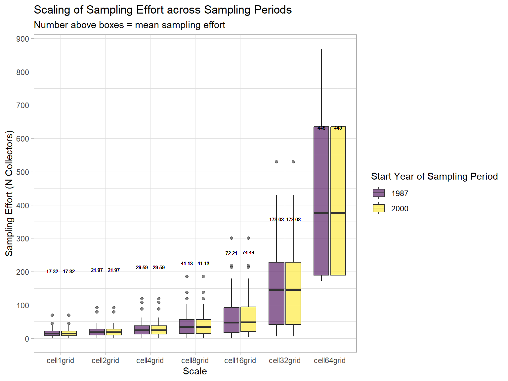

Code
# Clear current environment
rm(list=ls())# Clear current environment
rm(list=ls())This will become useful when all data sets have been merged to the long-file, but for now it also helps to explore the data and some of it’s issues more generally.
The data has the following columns:
"verbatim_name" "taxa" "samp_effort_type" "dataset" "start_year" "end_year" "license" "cell_grouping" "cell_label" "cell_area_km2" "cell_perimeter_km2" "cell_leng" "cell_ns_leng" "cell_ew_leng" "cell_long" "cell_lat" "samp_effort" "cell_samp_area" # Bird presence data ============================================================ #
presence_data <- readRDS(data_path)
## re-code columns to factors for correct grouping ====================================================== #
# Define the desired order of factor levels
desired_levels <- c("cell1grid", "cell2grid", "cell4grid", "cell8grid", "cell16grid", "cell32grid", "cell64grid", "cell128grid")
# Reorder the levels in the "cell_grouping" column
presence_data <- presence_data %>%
mutate(cell_grouping = factor(cell_grouping, levels = desired_levels))
# Re-code some other columns to factor
presence_data$cell_label <- as.factor(presence_data$cell_label)
presence_data$dataset <- as.factor(presence_data$dataset)
presence_data$taxa <- as.factor(presence_data$taxa)
## make variables for time slots =========================================================== #
times <- unique(presence_data$start_year)
time_slot1 <- times[1]
time_slot2 <- times[2]
# some Atlases have 3 sampling periods:
if (length(times) > 2) time_slot3 <- times[3]#| warning: false
#| echo: false
#| message: false
#| label: geopackage
## Read in geopackage file layers =========================================================== #
# Read in individual grids into list using sapply(), st_read() & character vector with paths and layers
# it's faster than doing it in a loop:
# loop: 0.15 sec elapsed
# sapply: 0.14 sec elapsed
tic("sapply")
grid_list <- sapply(layers, function(i) {
st_read(grid_path, paste(i), quiet = TRUE)
}, simplify = FALSE)
toc() # sapply: 0.14 sec elapsedsapply: 0.11 sec elapsedExplore species richness and how it changes spatially and temporally.
# Calculate species richness per cell, scale and sampling period:
temp_df <- presence_data %>% filter_all(any_vars(!is.na(.))) %>%
group_by(dataset, cell_grouping, cell_label, start_year) %>%
summarise(
SR_cell = n()) %>%
# Calculate range, mean (+ sd) of SR and mean Difference (+ sd) in SR between years:
ungroup() %>%
group_by(dataset, cell_grouping, start_year) %>%
mutate (minSR_cell = min(SR_cell),
maxSR_cell = max(SR_cell),
meanSR_cell = mean(SR_cell),
sdSR_cell = sd(SR_cell)) %>%
mutate(Diff_SR_meanSR = SR_cell - meanSR_cell) %>%
mutate(Diff_SR_meanSR = round(Diff_SR_meanSR, 2),
sdSR_cell = round(sdSR_cell, 2)) %>%
ungroup() `summarise()` has grouped output by 'dataset', 'cell_grouping', 'cell_label'.
You can override using the `.groups` argument.# How does species richness scale across sampling periods? ====================================== #
temp_df %>%
ggplot(aes(
y = meanSR_cell,
x = cell_grouping,
col = as.factor(start_year))) +
geom_point(alpha = 0.6) +
geom_line(aes(group = start_year))+
ylab("mean Species Richness") +
xlab("Scale") +
theme_light() +
labs(color = "Start Year of Sampling Period",
title = "Mean Species Richness across Scales",
subtitle = "Number above boxes = mean species richness") +
scale_y_continuous(breaks = seq(0, 400, by = 50), limits = c(0, 400)) +
geom_text(aes(label = round(meanSR_cell, 2), y = meanSR_cell),
vjust = -3, size = 2, position = position_dodge(width = 1)) + # Adjust position to dodge labels
scale_color_viridis(discrete = TRUE, alpha = 0.9)
ggsave(plot = last_plot(), filename = paste0(out_path, "Figs/SpeciesRichness.pdf"))Saving 6 x 4 in imageThings to consider:
# What's the unit of sampling effort in this Atlas? =========================================== #
presence_data %>% pull(samp_effort_type) %>% unique()[1] "N_collectors"# How does sampling effort scale? ============================================================= #
presence_data %>% ungroup() %>% group_by(start_year, cell_grouping) %>% select(samp_effort) %>% get_summary_stats(type = "mean_sd")Adding missing grouping variables: `start_year`, `cell_grouping`# A tibble: 16 × 6
start_year cell_grouping variable n mean sd
<dbl> <fct> <fct> <dbl> <dbl> <dbl>
1 1987 cell1grid samp_effort 84967 4.65 5.27
2 1987 cell2grid samp_effort 63646 8.40 8.56
3 1987 cell4grid samp_effort 34718 17.7 16.4
4 1987 cell8grid samp_effort 16265 39.0 31.9
5 1987 cell16grid samp_effort 6618 90.3 74.4
6 1987 cell32grid samp_effort 2717 208. 166.
7 1987 cell64grid samp_effort 1146 481. 291.
8 1987 cell128grid samp_effort 349 1395 0
9 2000 cell1grid samp_effort 75230 5.62 6.50
10 2000 cell2grid samp_effort 51317 10.3 10.5
11 2000 cell4grid samp_effort 29539 20.8 18.5
12 2000 cell8grid samp_effort 15046 43.9 33.9
13 2000 cell16grid samp_effort 6240 101. 75.5
14 2000 cell32grid samp_effort 2691 222. 162.
15 2000 cell64grid samp_effort 1198 482. 289.
16 2000 cell128grid samp_effort 357 1395 0 presence_data %>%
ungroup() %>%
select(start_year, cell_grouping, samp_effort) %>%
unique() %>%
group_by(start_year, cell_grouping) %>%
summarise(n= n(),
min_samp_effort = min(samp_effort),
mean_samp_effort = mean(samp_effort),
sd_samp_effort = sd(samp_effort),
max_samp_effort = max(samp_effort))`summarise()` has grouped output by 'start_year'. You can override using the
`.groups` argument.# A tibble: 16 × 7
# Groups: start_year [2]
start_year cell_grouping n min_samp_effort mean_samp_effort
<dbl> <fct> <int> <int> <dbl>
1 1987 cell1grid 28 1 17.3
2 1987 cell2grid 36 1 22.0
3 1987 cell4grid 49 1 29.6
4 1987 cell8grid 55 1 41.1
5 1987 cell16grid 33 1 72.2
6 1987 cell32grid 12 6 173.
7 1987 cell64grid 4 172 448
8 1987 cell128grid 1 1395 1395
9 2000 cell1grid 28 1 17.3
10 2000 cell2grid 36 1 22.0
11 2000 cell4grid 49 1 29.6
12 2000 cell8grid 55 1 41.1
13 2000 cell16grid 32 3 74.4
14 2000 cell32grid 12 6 173.
15 2000 cell64grid 4 172 448
16 2000 cell128grid 1 1395 1395
# ℹ 2 more variables: sd_samp_effort <dbl>, max_samp_effort <int>presence_data %>%
ungroup() %>%
select(start_year, cell_grouping, samp_effort) %>%
filter(cell_grouping != "cell128grid") %>%
unique() %>%
group_by(start_year, cell_grouping) %>%
mutate(mean_samp_effort = mean(samp_effort)) %>%
ggplot(aes(y = samp_effort, x = cell_grouping, fill = as.factor(start_year))) +
geom_boxplot(alpha = 0.6) +
ylab("Sampling Effort (N Collectors)") +
xlab("Scale") +
theme_light() +
scale_fill_viridis(discrete = TRUE, alpha = 0.7) +
labs(fill = "Start Year of Sampling Period",
title = "Scaling of Sampling Effort across Sampling Periods",
subtitle = "Number above boxes = mean sampling effort") +
scale_y_continuous(breaks = seq(0, max(presence_data$samp_effort), by = 100)) +
geom_text(aes(label = round(mean_samp_effort, 2), y = mean_samp_effort),
vjust = -15, size = 2, position = position_dodge(width = 0.75)) # Adjust position to dodge labels
ggsave(plot = last_plot(), filename = paste0(out_path, "Figs/SamplingEffort.pdf"))Saving 8 x 6 in imageNot all cells that are present in the smallest grid of the map have been sampled. Sometimes this relates to the accessibility of the area (e.g., steep slopes in mountain ranges or large distance from roads and cities).
Note: this varies among sampling periods!
How many cells (and which ones) have been sampled at all?
Which have never been visited?
What is the proportion?
Since often these unsampled cells are clustered spatially, consider cutting the extent of the study area to a part of the atlas where sampling has been more or less complete for more robust results.
Could be explored e.g., using sampling curves to find a threshold for cutting the area on scales larger then the original sampling scale.
? i.e., average sampling effort across cells (sampled and unsampled). Calculate sampling curves for grid cells. If average sampling effort of sampled and unsampled cells in the smallest grid falls below a threshold on the sampling curve for larger grids, this means that sampling was not complete enough in this larger cell and it should be discarded.
Some Resources to check:
iNEXT package: https://doi.org/10.1111/2041-210X.1261
Corals and sampling strategy: https://doi.org/10.1111/1440-1703.12096
Flo’s Github repo: https://github.com/bienflorencia/Multiple-forms-of-hotspots-of-tetrapod-biodiversity
# Detect cells that have not been sampled by finding the difference between the grids and the presence data
# For each scale separately:
grid_list2 <- list()
for (i in 1:length(layers)){
current_layer <- layers[i]
current_grid <- grid_list[[i]]
print(current_layer)
## Sampling period 1
cell_labels1 <- presence_data %>%
filter(start_year == "1987", cell_grouping == current_layer) %>%
pull(cell_label) %>% unique()
# differences in label names between grid and presence data
unsampled_cells_time1 <- setdiff(current_grid$cell_label, cell_labels1)
print(paste0("N cells not sampled in time 1 = ", length(unsampled_cells_time1)))
## Sampling period 2
cell_labels2 <- presence_data %>%
filter(start_year == "2000", cell_grouping == current_layer) %>%
pull(cell_label) %>% unique()
# differences in label names between grid and presence data
unsampled_cells_time2 <- setdiff(current_grid$cell_label, cell_labels2)
print(paste0("N cells not sampled in time 2 = ", length(unsampled_cells_time2)))
# add column with dummy variable for each time slot
current_grid <- current_grid %>%
mutate(sampled_1 = if_else(cell_label %in% unsampled_cells_time1, '0', '1'),
sampled_2 = if_else(cell_label %in% unsampled_cells_time2, '0', '1')) %>%
mutate(sampled_1 = as.factor(sampled_1),
sampled_2 = as.factor(sampled_2)) %>%
group_by(sampled_1) %>%
mutate(n_1 = n(),
Total_Area_per_scale_time1 = sum(cell_area_km2)) %>% ungroup() %>%
group_by(sampled_2) %>%
mutate(n_2 = n(),
Total_Area_per_scale_time2 = sum(cell_area_km2))
grid_list2[[i]] <- current_grid
}[1] "cell1grid"
[1] "N cells not sampled in time 1 = 4821"
[1] "N cells not sampled in time 2 = 5162"
[1] "cell2grid"
[1] "N cells not sampled in time 1 = 833"
[1] "N cells not sampled in time 2 = 922"
[1] "cell4grid"
[1] "N cells not sampled in time 1 = 134"
[1] "N cells not sampled in time 2 = 146"
[1] "cell8grid"
[1] "N cells not sampled in time 1 = 30"
[1] "N cells not sampled in time 2 = 29"
[1] "cell16grid"
[1] "N cells not sampled in time 1 = 5"
[1] "N cells not sampled in time 2 = 6"
[1] "cell32grid"
[1] "N cells not sampled in time 1 = 3"
[1] "N cells not sampled in time 2 = 3"
[1] "cell64grid"
[1] "N cells not sampled in time 1 = 2"
[1] "N cells not sampled in time 2 = 2"
[1] "cell128grid"
[1] "N cells not sampled in time 1 = 0"
[1] "N cells not sampled in time 2 = 0"# exclude cells that were not sampled from the analysis:
grid_list_reduced1 <- list()
grid_list_reduced2 <- list()
p_list <- list()
for (i in 1:length(grid_list2)){
grid_list_reduced1[[i]] <- grid_list2[[i]] %>% filter(!(cell_label %in% unsampled_cells_time1))
grid_list_reduced2[[i]] <- grid_list2[[i]] %>% filter(!(cell_label %in% unsampled_cells_time2))
if(unique(grid_list_reduced1[[i]]$cell_grouping) != "cell128grid") p1 <- grid_list_reduced1[[i]] %>%
tm_shape() +
tm_fill("sampled_1", palette=c("viridis")) +
tm_borders()
if (unique(grid_list_reduced2[[i]]$cell_grouping) != "cell128grid") p2 <- grid_list_reduced2[[i]] %>%
tm_shape() +
tm_fill("sampled_2", palette=c("viridis")) +
tm_borders()
p_list[[i]] <- tmap_arrange(p1, p2)
}Deprecated tmap v3 code detected. Code translated to v4
Deprecated tmap v3 code detected. Code translated to v4
Deprecated tmap v3 code detected. Code translated to v4
Deprecated tmap v3 code detected. Code translated to v4
Deprecated tmap v3 code detected. Code translated to v4
Deprecated tmap v3 code detected. Code translated to v4
Deprecated tmap v3 code detected. Code translated to v4
Deprecated tmap v3 code detected. Code translated to v4
Deprecated tmap v3 code detected. Code translated to v4
Deprecated tmap v3 code detected. Code translated to v4
Deprecated tmap v3 code detected. Code translated to v4
Deprecated tmap v3 code detected. Code translated to v4
Deprecated tmap v3 code detected. Code translated to v4
Deprecated tmap v3 code detected. Code translated to v4p_list[[1]]
[[2]]
[[3]]
[[4]]
[[5]]
[[6]]
[[7]]
[[8]]rm(p_list, p1, p2)


Notes:
even though cells have not been sampled, we assume that the species covers the whole are of the cell (column: cell_area_km2)
since the Atlas presence data only has cells that have been sampled, we have to base our calculation on the full grid
Formulas:
Occupancy = sum of areas of all cells where a species is present
Relative Occupancy = Occupancy divided by the total Area of the Atlas (sum of all cells at a given scale)
This workflow requires grouping by:
verbatim_name (as we want to calculate occupancy for each species separately)
cell_grouping (as we want to calculate occupancy for each scale separately)
start_year (as we want to calculate occupancy for each sampling period separately)
occ_data_list <- list()
# We run the loop for each scale (N = 8)
for (i in 1:length(grid_list2)){
# subset the grid_list and work on a single scale:
map_atlas <- grid_list2[[i]]
# Calculate total area of alberta based on grid1 (original scale):
total_area_Atlas <- map_atlas %>%
select(cell_grouping, cell_label, cell_area_km2) %>%
mutate(total_area = sum(cell_area_km2)) %>%
pull(total_area) %>%
unique()
# Create column for total Area:
pres_data <- presence_data %>% filter(cell_grouping == unique(map_atlas$cell_grouping) )
# Merge sampled and unsampled cells for calculations:
pres_data_full <- merge(pres_data, map_atlas, by = intersect(names(pres_data), names(map_atlas)), all = T)
pres_data_full$total_area_Atlas <- total_area_Atlas
# Make subset of the data for the calculations.
pres_data_full_reduced <- pres_data_full %>%
ungroup() %>%
select(verbatim_name, start_year, cell_grouping, cell_area_km2, cell_label, total_area_Atlas,
Total_Area_per_scale_time1, Total_Area_per_scale_time2)
## ============================================================================================= ##
## ================================== Calculate Occupancy ===================================== ##
## ============================================================================================= ##
occ_data <- pres_data_full_reduced %>%
ungroup() %>%
# Necessary grouping to calculate occupancy:
group_by(verbatim_name, start_year, cell_grouping) %>%
# Calculate Occupancy:
mutate(occupancy_area = sum(cell_area_km2)) %>%
# Calculate relative Occupancy:
mutate(relative_occupancy = case_when(
start_year == time_slot1 ~ occupancy_area/Total_Area_per_scale_time1,
start_year == time_slot2 ~ occupancy_area/Total_Area_per_scale_time2)) %>%
# Round values to 2 digits after the comma:
mutate(relative_occupancy = round(relative_occupancy,2)) %>%
filter(!is.na(verbatim_name)) %>%
# Remove duplicated rows:
unique()
# save to list:
occ_data_list[[i]] <- occ_data
}
# Bind to one dataframe:
occ_data_full_df <- plyr::rbind.fill(occ_data_list, fill=T)
occ_data_full_df %>% filter_all(any_vars(is.na(.))) [1] verbatim_name start_year
[3] cell_grouping cell_area_km2
[5] cell_label total_area_Atlas
[7] Total_Area_per_scale_time1 Total_Area_per_scale_time2
[9] occupancy_area relative_occupancy
<0 rows> (or 0-length row.names)# create scale column as the average cell_area_km2 per cell_grouping
occ_data_full_df <- occ_data_full_df %>% group_by(cell_grouping, start_year) %>% mutate(Scale_km2 = mean(cell_area_km2))
occ_data_full_df %>%
group_by(cell_grouping, start_year) %>%
get_summary_stats(c(relative_occupancy, occupancy_area, Total_Area_per_scale_time1, Total_Area_per_scale_time2, Scale_km2), type="mean_sd")# A tibble: 80 × 6
start_year cell_grouping variable n mean sd
<dbl> <fct> <fct> <dbl> <dbl> <dbl>
1 1987 cell1grid relative_occupancy 84967 0.253 1.32e-1
2 1987 cell1grid occupancy_area 84967 55548. 2.89e+4
3 1987 cell1grid Total_Area_per_scale_time1 84967 219069. 0
4 1987 cell1grid Total_Area_per_scale_time2 84967 305835. 1.53e+5
5 1987 cell1grid Scale_km2 84967 99.2 0
6 2000 cell1grid relative_occupancy 75230 0.252 1.35e-1
7 2000 cell1grid occupancy_area 75230 46253. 2.47e+4
8 2000 cell1grid Total_Area_per_scale_time1 75230 291279. 1.11e+5
9 2000 cell1grid Total_Area_per_scale_time2 75230 183558. 0
10 2000 cell1grid Scale_km2 75230 98.6 0
# ℹ 70 more rowscols_n <- intersect(names(presence_data), names(occ_data_full_df))
occ_data_full <- unique(merge(presence_data, occ_data_full_df, by = cols_n, all.y = T))
gc() used (Mb) gc trigger (Mb) max used (Mb)
Ncells 3706219 198.0 13740264 733.9 17175330 917.3
Vcells 29560735 225.6 63723124 486.2 63605090 485.3# Proportional AOO (per sampled area)
plot_data <- occ_data_full_df %>%
filter(cell_grouping != "cell128grid") %>%
unique() %>%
select(cell_grouping, start_year,
cell_area_km2, Scale_km2,
verbatim_name, relative_occupancy, occupancy_area) %>% unique() %>% ungroup()
gg1 <- ggplot(data = plot_data,
aes(y = log10(relative_occupancy+1),
x = log10(Scale_km2),
col = as.factor(verbatim_name),
group = factor(verbatim_name))) +
geom_point(show.legend = F) +
ylim(-0.05, 0.35)+
geom_line() +
facet_wrap(start_year~.) +
theme_light() +
scale_color_viridis(discrete = TRUE, alpha = 0.7) +
labs(title = "Relative Occupancy [0,1] Across Scales (km2)") +
theme(legend.position = "none")
# Absolute AOO (per sampled area)
gg2 <- ggplot(data = plot_data,
aes(y = log10(occupancy_area),
x = log10(Scale_km2),
col = as.factor(verbatim_name),
group = factor(verbatim_name))) +
geom_point(show.legend = F) +
ylim(1.8, 5.9)+
geom_line() +
facet_wrap(start_year~.) +
theme_light() +
scale_color_viridis(discrete = TRUE, alpha = 0.7) +
labs(title = "Absolute Occupancy (km2) Across Scales (km2)") +
theme(legend.position = "none")
gg_grid <- grid.arrange(gg1, gg2, nrow = 2)
ggsave(plot = gg_grid, filename = paste0(out_path, "Figs/OccupancyAcrossScales.pdf"), height = 10, width = 8 )